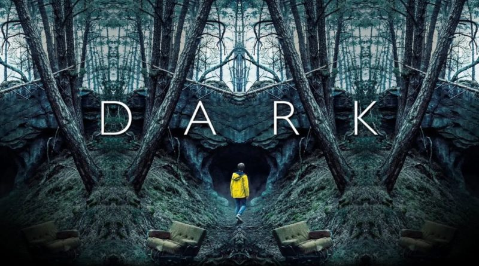

-
Bom dia, Verônica
Verônica Torres trabalha como escrivã na Delegacia de Homicídios de São Paulo e tem uma rotina bastante entediante. Após presenciar um suicídio, ela precisa lutar contra os traumas de seu passado e acaba tomando uma arriscada decisão: usar toda a sua habilidade investigativa para ajudar duas mulheres desconhecidas.
Assistir
-
A menina que matou os pais[...]
Em 2002, o casal de namorados Suzane von Richthofen e Daniel Cravinhos declararam-se culpados pelo assassinato dos pais de Suzane. Ao longo do julgamento deles, ambos deram versões diferentes sobre o TERROR que, à época, teve grande repercussão e gerou indignação da população.
Assistir
-

Mindhunter
Dois agentes do FBI expandem as fronteiras da ciência criminal nos anos 70 com um perigoso mergulho no universo da psicologia do assassinato.
Assistir
-

Dark
Quatro famílias iniciam uma desesperada busca por respostas quando uma criança desaparece e um complexo mistério envolvendo três gerações começa a se revelar.
Assistir

O lobo atrás da porta
Uma criança é sequestrada e seus pais, Bernardo e Sylvia, decidem ir até a delegacia. O delegado resolve interrogá-los separadamente e descobre que Bernardo tinha uma amante, Rosa, que também é levada ao local para averiguações. A partir de depoimentos do trio, o delegado descobre uma rede de mentiras, amor, vingança e ciúmes.

Coringa
Isolado, intimidado e desconsiderado pela sociedade, o fracassado comediante Arthur Fleck inicia seu caminho como uma mente criminosa após assassinar três homens em pleno metrô.

O poderoso chefão
ma família mafiosa luta para estabelecer sua supremacia nos Estados Unidos depois da Segunda Guerra Mundial. Uma tentativa de assassinato deixa o chefão Vito Corleone incapacitado e força os filhos Michael e Sonny a assumir os negócios

A morte no Nilo
As férias do detetive belga Hercule Poirot à bordo de um glamouroso cruzeiro no Egito se transforma em uma caçada a um assassino quando a lua de mel de um famoso casal é interrompida.

Os suspeitos
Depois que sua filha de seis anos e uma amiga dela são sequestradas, Keller Dove, um carpinteiro de Boston, enfrenta o departamento de polícia e o jovem detetive encarregado do caso para fazer justiça com as próprias mãos.

O quarto do pânico
A recém-separada Meg Altman e a filha Sarah são surpreendidas com a invasão de sua casa por três bandidos. Elas se escondem em um quarto secreto para situações de emergências, mas passam a enfrentar pequenos problemas dentro e fora de seu refúgio, pois o que os homens procuram está justamente no quarto onde elas estão.